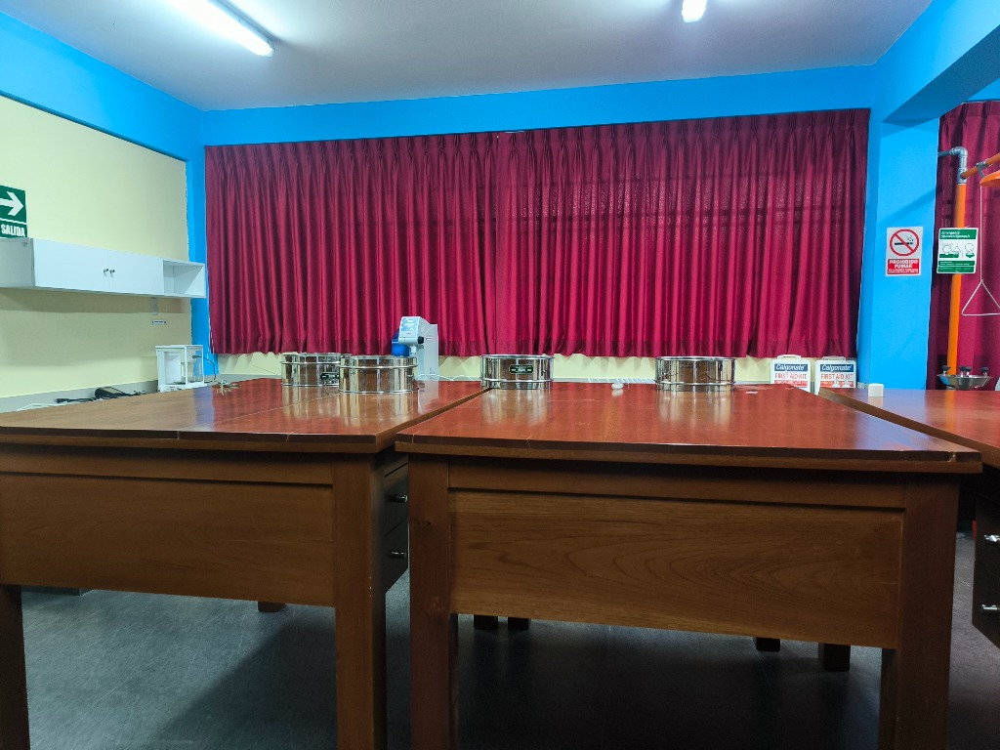

Las propiedades físicas del suelo determinan la retención de agua, la aireación y el comportamiento mecánico del terreno, factores cruciales para estudios ambientales, agronómicos y de ingeniería.
Procedimientos habituales: Realizamos ensayos de granulometría (tamizado mecánico y sedimentación), determinación de la densidad aparente y real, y clasificación textural del suelo. Estos procesos permiten caracterizar la matriz física donde ocurren las reacciones geoquímicas.
(Aquí puedes incorporar metodologías detalladas: estándares ASTM, curva granulométrica, tamices utilizados, etc.)